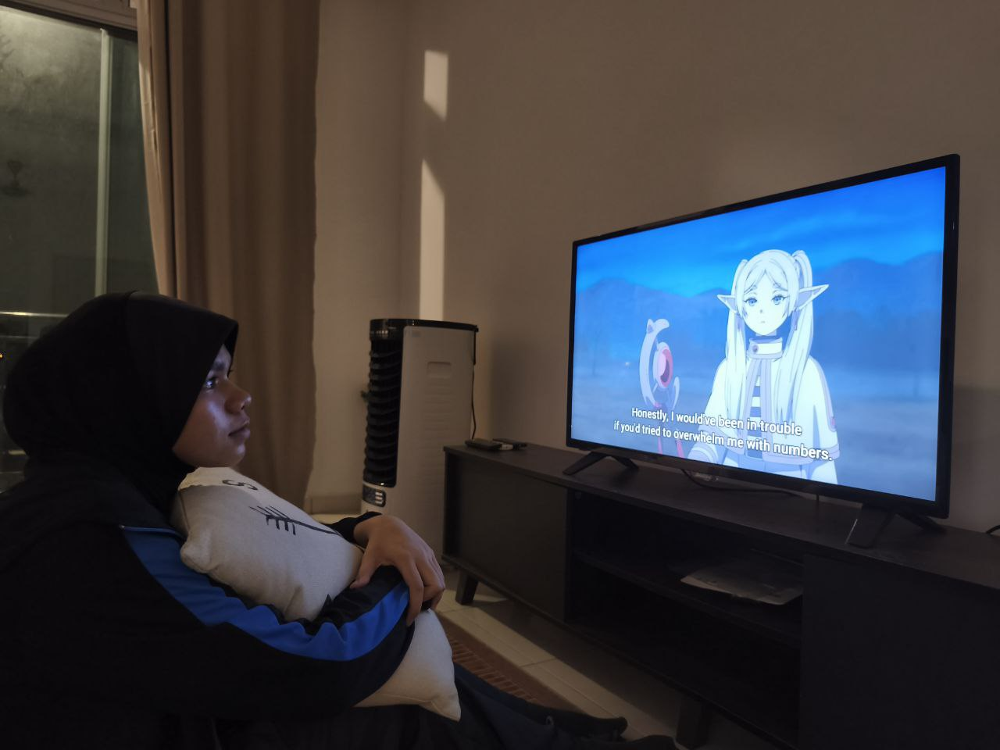
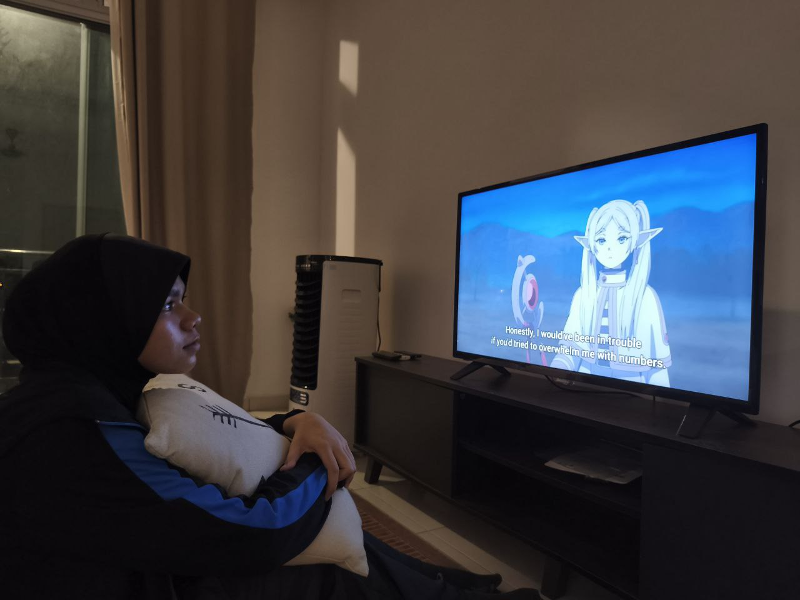

Sousou no Frieren is a calm yet emotional anime about an elf mage named Frieren who once helped defeat a great evil with her hero friends. But since elves live much longer than humans, she outlives them and begins a journey to understand human emotions and memories. The story is slow and peaceful, but also deep and touching. It shows how Frieren grows by meeting new people and remembering her old friends. The animation is beautiful, and the music is soft and emotional. It’s a gentle fantasy with strong feelings about time, loss, and friendship. The animation and graphics are stunning, especially the battle scenes. I love Frieren's characteristics since it's not giving 'typical female lead' vibes. She is calm and cool, unlike typical female lead who is loud, weak or annoying. It's just, I hope she can spend more time with the Hero Party, especially Himmel ;D
RATING :
 
